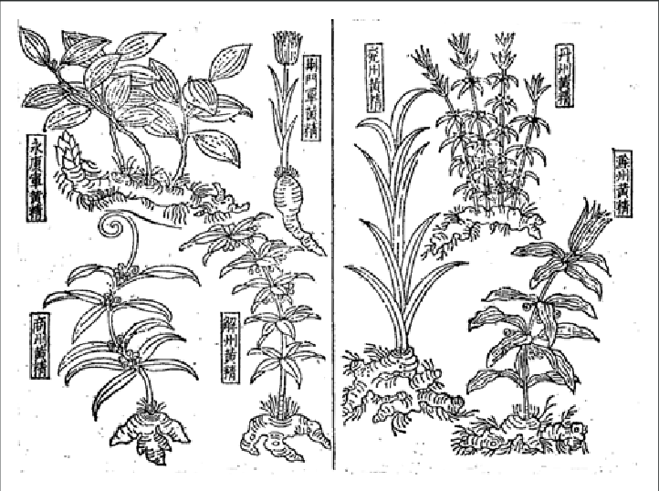
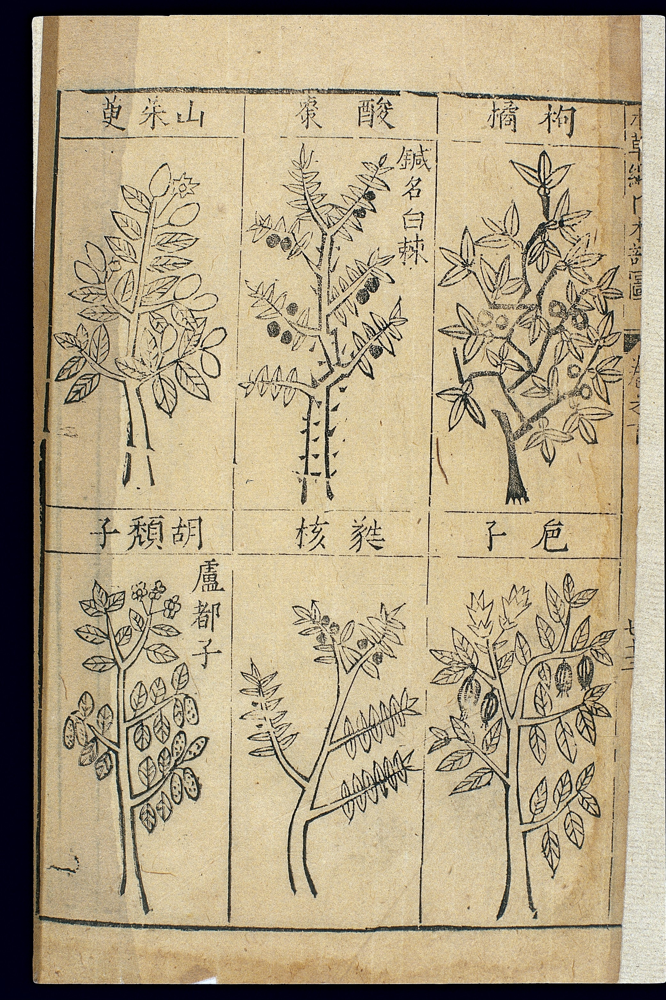
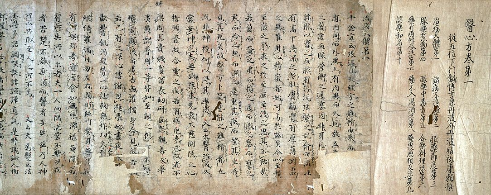

East Asia herbal pharmacopeias — cleared plates
Draft overlay for PR #307. See RIGHTS.md.

Su Song / tujing tradition line plate (CC BY 4.0)

Bencao gangmu woodcut page, Wellcome L0039330 (CC BY 4.0)

Ishinpō Nakarai copy photograph (public domain)